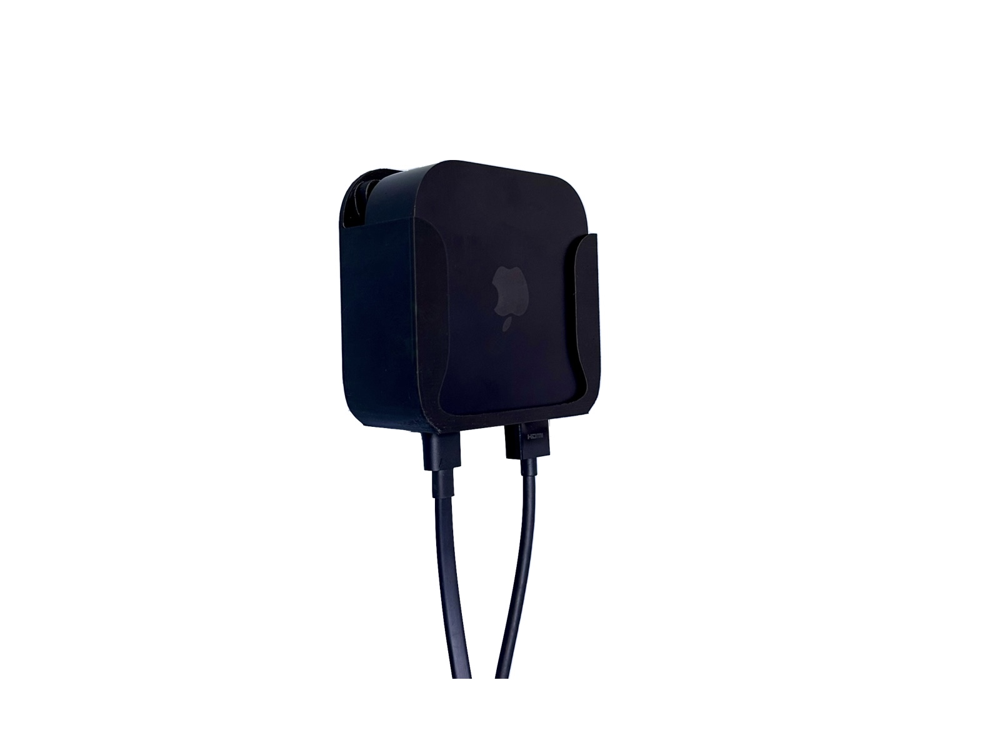
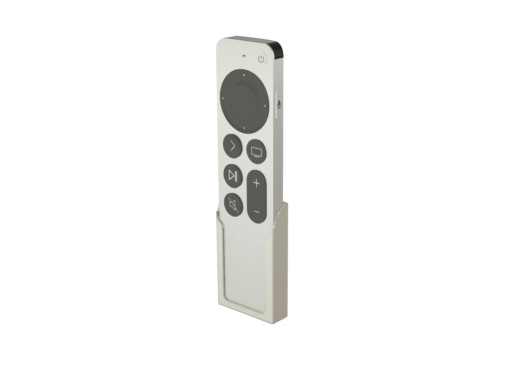

PhysicalDigital
Apple TV 4K 3rd Gen Multi-Mount
Wall · VESA · TV Vent Hooks · Adhesive
One compact holder with four installation methods for Apple TV 4K 3rd Generation (2022), models A2737 and A2843.
View product →Apple TV
Original accessories designed to organize Apple TV hardware while preserving practical installation and cable access.

Wall · VESA · TV Vent Hooks · Adhesive
One compact holder with four installation methods for Apple TV 4K 3rd Generation (2022), models A2737 and A2843.
View product →
USB-C Access · Screw or Adhesive · 8 Colors
Compact contoured holder that keeps the Siri Remote accessible and chargeable while mounted.
View product →
Compact desktop holder · Four colors · Weighted PETG
Give your Apple Siri Remote a dedicated place on your desk, shelf, or media console. This compact stand holds the remote upright with a small footprint and a weighted base for everyday stability.
View product →
Two custom-fit slots · Four colors · Weighted PETG
Organize your Apple Siri Remote and compatible Samsung TV Remote together in a compact stepped desktop stand. Two individually shaped openings hold the remotes upright and within easy reach.
View product →